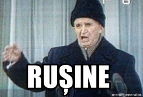
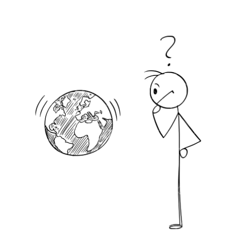

Te-ai gândit vreodată cat de mult poate afecta planeta consumul excesiv al energiei electrice? Cât de dăunător poate să fie un lucru minuscul ca un încărcător lăsat mereu în priză sau ca becul aprins inclusiv în timpul zilei?
Ce ar zice tovarășul Nicolae Ceaușescu despre atâta consum de energie? (evident, este o glumă)

Haideți să aflăm împreună cum până și un aspect considerat de mulți oameni nesemnificativ merge mână în mână cu marile probleme întâlnite la nivel global.
Un prim efect negativ pe care îl are consumul excesiv de curent electric este poluarea aerului. Acum , probabil, va întrebați cum două materii atât de diferite pot avea o legătură de efect-cauză. Ei bine, în procesul de generare al electricității este nevoie de energie degajată pentru arderea cărbunelui, petrolului și a gazelor naturale.
Probabil toată lumea a auzit de cum aceste arderi contribuie la poluarea masivă a aerului, având legătură inclusiv cu încălzirea globală.
Bineînțeles, nici poluarea apelor nu dispare din aceste efecte dăunătoare. Ce vrem să enunțăm prin asta? Ne referim la toate scurgerile de ulei în ape, majoritar fiind cele de petrol care au o consecință negativă la adresa compoziției și calității lor.
Ultimul aspect care se leagă de consumul excesiv al electricității (printre multe altele) este o problemă de mediu despre care se vorbește prea puțin după părerea noastră, și anume teritoriul utilizat de centralele electrice. Să nu ne înțelegeți greșit , este inevitabil ca electricitatea să fie produsă fără să afecteze o anumită zonă, dar vrem să subliniem ideea că acestea pot fii înlocuite de centrale mai prietenoase cu mediul. Astfel, pas cu pas, ajungem mai aproape de rezolvarea acestor probleme. Putem genera electricitate din surse regenerabile, fiind produsa din „unelte ajutătoare”, incluzând: energia eoliana și solara, energia geotermală și bioenergia.
